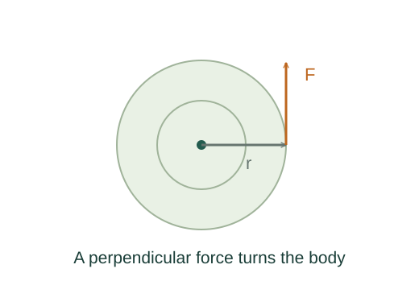

Derive torque as the rate of angular momentum
Angular momentum measures motion about a chosen origin. Differentiating its definition shows that torque is what changes it, just as force changes linear momentum.
What the symbols mean
𝐫: position from a fixed origin; 𝐩 = m𝐯: particle momentum; 𝐋: angular momentum; 𝛕: torque about that same origin.
When this applies
A fixed origin in an inertial frame and classical particles. For a system, internal torques must cancel for only external torques to remain.
Developing the argument

Define angular momentum
The cross product selects the part of momentum perpendicular to the position vector. Radial motion has zero angular momentum about that origin.
A closer lookWhy does the cross product measure turning? ↗Apply the product rule
Differentiate both factors. The first term contains velocity crossed with itself, so it vanishes.
Recognize torque
Define torque as 𝐫 × 𝐅. Its direction gives the axis of the induced change in angular momentum.
Specialize to a rigid fixed-axis rotation
For a body rotating about a fixed principal axis, the component along the axis is Laxis = Iω. If I is constant, differentiating gives the scalar rotational law. Vanishing external torque conserves L even if I changes.
A worked example
A skater reducing axial inertia from 4 to 2 kg·m² doubles angular speed if external torque about that axis is negligible. Their rotational kinetic energy increases through muscular work.
Derivation behind this calculation ↗A point to keep straight
Torque and angular momentum depend on the chosen origin. In general 𝐋 need not be parallel to angular velocity.
Check the assumptions and derivation ↗